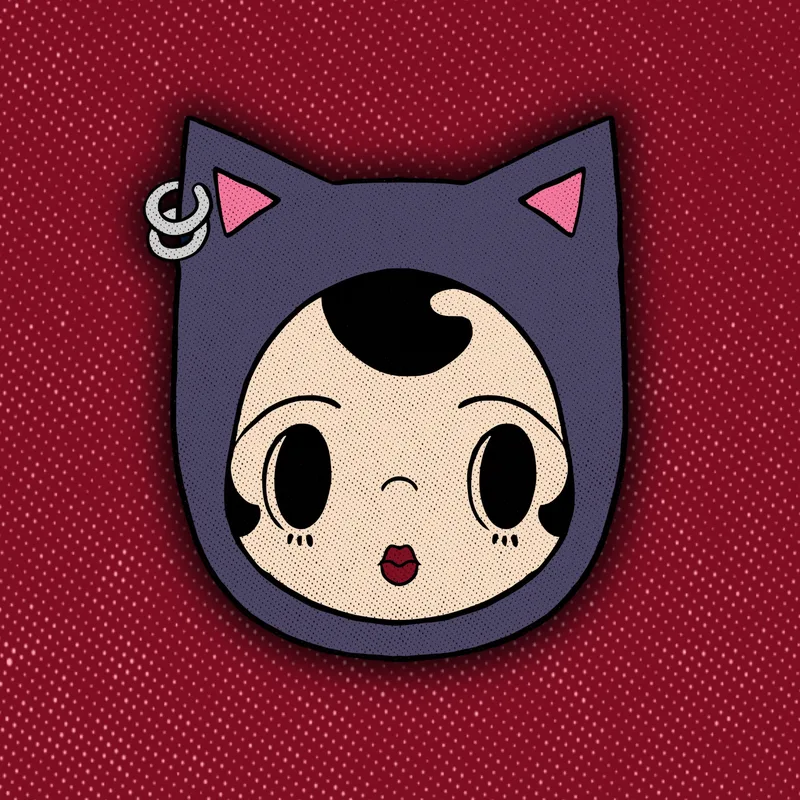

Events this week
Hand-picked shows, markets, workshops and parties happening around Orlando in the next seven days.

SEARCH Central FloridaOrlando arts & culture
Your guide to the best local art, music, markets and events in Orlando, so you can get off your phone and out the door.

Hand-picked shows, markets, workshops and parties happening around Orlando in the next seven days.
Art from a different Central Florida artist in your mailbox every month, plus perks from local businesses.

Local artist spotlights, Orlando guides and news from the mail club.